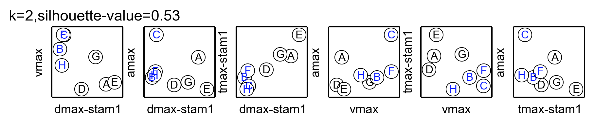
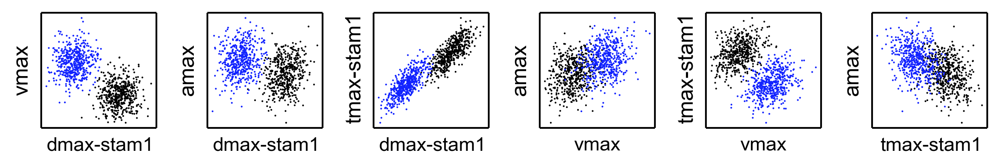
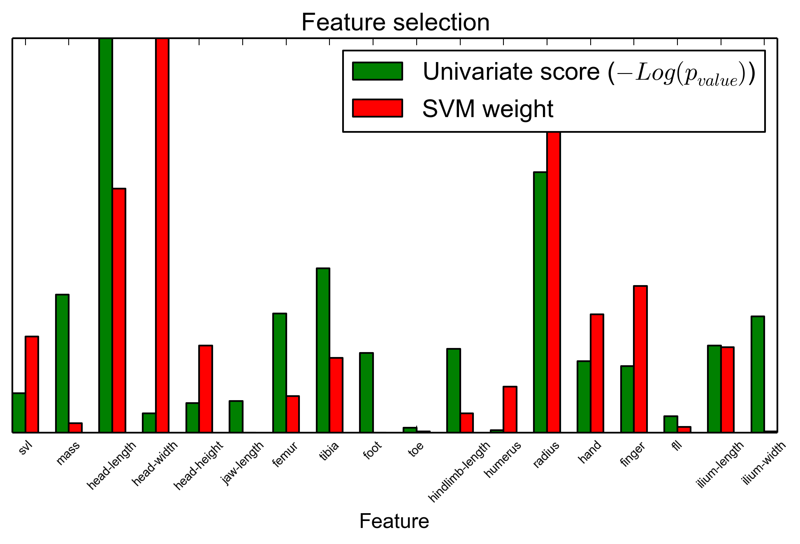

Meta-data analysis¶
Target variable correlation¶
There are four target variables
vmax— maximum swim speed
amax— maximum swim acceleration
tmax-stam1— stamina (timed jumped till exhaustion)
dmax-stam1— endurance (distance jumped till exhaustion)
We investigate the correlation among target variables, because classification results will be biased towards the correlated dimensions.

There is a correlation between stamina and endurance.
Gaussian mixed model on target variables¶
Because classes in the case of performance experiments are arbitrary, we explore the target variables with a Gaussian mixture model (GMM). We are essentially, exploring several clustering configurations in order to understand the data in the 4 dimensions.
{kind=link}
Endurance Classes¶
We use two clusters to represent the data. If we sample from the multi-variate Gaussian distributions with \(n=1000\) we can produce the following plots that give us some insight into the structure of these data.
{kind=link}
Given the GMM shown in these dimensions, we can make some basic observations about the three classes.
Class |
amax |
vmax |
dmax-stam1 |
tmax-stam1 |
|---|---|---|---|---|
blue (non-endurant) |
dispersed |
high |
low |
low |
black (endurant) |
dispersed |
low |
high |
high |
We can distinguish the classes as non-endurant (blue) and endurant (orange). The probabilities of each classification are shown in parenthesis.
Classifications¶
A= [‘endurant’] (1.0)
B= [‘non-endurant’] (1.0)
C= [‘non-endurant’] (1.0)
D= [‘endurant’] (0.9985)
E= [‘endurant’] (1.0)
F= [‘non-endurant’] (1.0)
G= [‘endurant’] (1.0)
H= [‘non-endurant’] (0.9995)
Feature selection¶
Because a large number of co-variates were measured throughout the course of the experiment we use feature selection to reduce the dimensionality of the problem and trim variables that are not descriptive of performance classificaiton. Here we use a univariate feature selector and we show the weights from linear support vector machine (SVM) models [Chang08].
{kind=link}
Here are the features ranked based on a sum of the two scores.
head-length1.0,0.62,1.62
radius0.66,0.82,1.48
head-width0.05,1.0,1.05
tibia0.42,0.19,0.61
finger0.17,0.37,0.54
hand0.18,0.3,0.48
ilium-length0.22,0.22,0.44
femur0.3,0.09,0.39
mass0.35,0.02,0.38
svl0.1,0.24,0.34
ilium-width0.3,0.0,0.3
head-height0.08,0.22,0.3
hindlimb-length0.21,0.05,0.26
foot0.2,0.0,0.2
humerus0.01,0.12,0.12
jaw-length0.08,0.0,0.08
fll0.04,0.01,0.06
toe0.01,0.0,0.02